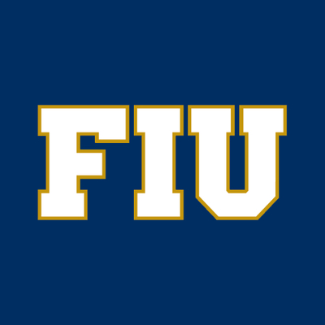

Profile

R. Nicolas Caif
Developer / Engineer
After many years in the construction business I decided to build in a different manner and become part of software development.
My Journey as Software Engineer
|
Jan 2022 - Present |
Eventbrite |

|
Software Engineer II |
|
Dec 2020 - Dec 2021 |
Eventbrite |
|
|
Software Engineer I |
|
Nov 2019 - Nov 2020 |
Eventbrite |
|
|
Associate Engineer |
My first steps
|
Aug 2019 - Nov 2019 |
Eventbrite |
|
|
Eventbrite Development Academy EDA 3.0 |
|
Jun 2019 - Jun 2019 |
Le Wagon |
|
Teacher Assistant at Le Wagon Batch #255 |
Bootcamp Projects
Parkingshare | | |
|
|
Along with 2 team members in two weeks as a final project we came up with the user stories, wireframed and designed the UX/UI and developed the frontend and backend of an Airbnb prototype for parking. Project was built on Ruby on Rails, Postgress as DB and using Heroku to configure and host the webapp. |
|
Mr Cocktail | | |
|
|
A very simple and funny site we built as an exercise for MVC pattern in Ruby on Rails. |
Education
|
Jan 2019 - Mar 2019 |
Le Wagon |
|
Full-Stack Web Developer, Computer Programming |
|
Aug 2006 - Apr 2010 |
Florida International University |
|  |
Bachelors of Science - Civil Engineering |
My experience as a Civil Engineer
|
Jan 2017 - Dec 2018 |
Vier S.A. |
|
Co-Founder Construction Manager |
|
Mar 2013 - Mar 2017 |
CEO.S.A. |
|
Estimator and Management Control |
|
Mar 2012 - Mar 2013 |
C.M.P-UTE (for Vale / CRC - Odebrecht Techint) |
|
Productivity and Quality Control |